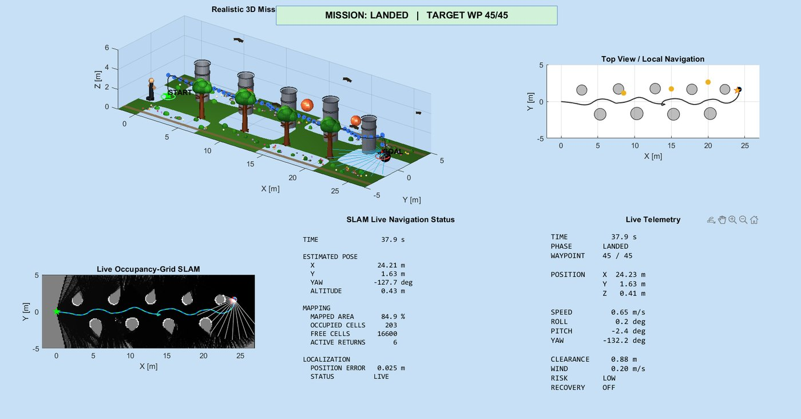

Autonomous quadrotor navigation and SLAM
Quadrotor navigation with full 6-DOF dynamics and LiDAR-based occupancy-grid SLAM, tested under stochastic wind. In this run it reaches all 45 waypoints and lands with a 0.025 m localization error. September 2026.
View on GitHub ↗